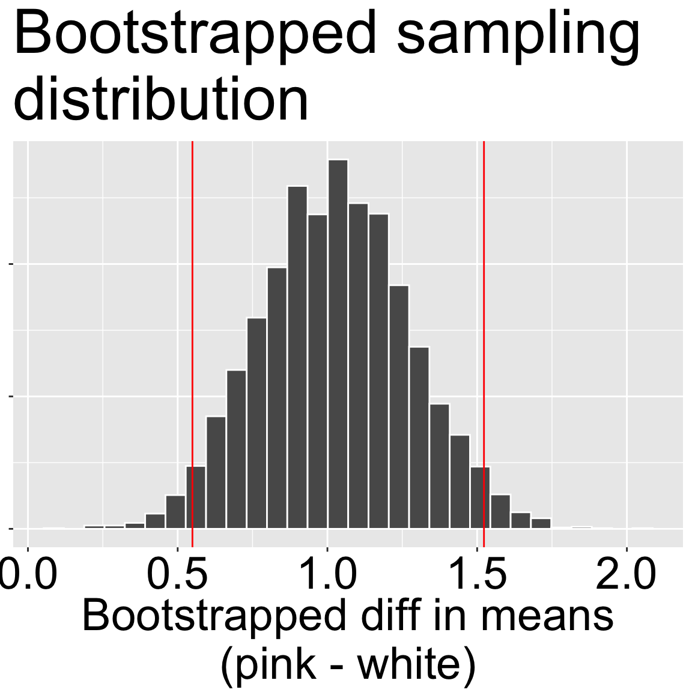

Motivating scenario: We have summarized the difference in the means of two groups. But we know that all estimates should be accompanied by our estimate of uncertainty in them.
Learning goals: By the end of this section, you should be able to:
Quantify uncertainty in estimates of difference in the mean as the:
A “point” estimate is just that – our informed guess of a parameter value. Point estimates come from samples, so we should always pair them with an uncertainty estimate. To estimate uncertainty in the difference in means we find the “pooled standard error” and then go to our t-distribution to turn this into a confidence interval.
Remember: The equation for the pooled variance: \[s^2_p = \frac{\text{df}_1 \times s_1^2+ \text{df}_2 \times s_2^2}{\text{df}_\text{total}}\].
\(s_i^2\): The variance within group \(i\).
\(\text{df}_i\): The degrees of freedom in group \(i\).
\(\text{df}_\text{total}\): The total degrees of freedom (defined in text below).
The standard error for the difference in means is a strange looking equation. Recall that $s^2_p is the “pooled variance” and using this value implies that we believe that variance is similar within each group:
The 95% confidence interval of the difference in means: Is pretty straightforward. Now that we have our standard error, we simply multiply it by \(t_{\text{crit, }{\alpha=0.05\text{, }df_\text{total}}}\).
The total degrees of freedom is the sum of the degrees of freedom for each estimate:
Note these summaries are interesting but are pretty tough to interpret as i dont know of anyone who thinks on the log(x+0.2) scale. A
We have done all our calculations on log(x+0.2) transformed data. Interpretation of these results on the original linear scale is tricky, and cannot be achieved without some additional assumptions.
An alternative: Bootstrap to quantify uncertainty
Everything above is statistically valid—the data meet the assumptions of the analysis. The bummer, as we noted, is that the results are awkward to interpret. As scientists, we balance values differently - I usually prioritize clarity over perfection. As such I often presentplainly interpretable summaries over technically perfect but opaque ones.
Below, I bootstrap (see the section on uncertainty for review) the untransformed data to obtain a 95% confidence interval without making assumptions about equal variance or normality. The 95% bootstrap CI ranges from 0.50 to 1.52. This interval is roughly the mean \(\pm 2 \times \text{Bootstrapped SE}\), suggesting that in this case, results are robust to violations of the assumption of normality.
In a later section you will see that this is basically we would get from a version of the t-test that does not assume equal variance (we assume unequal variance because on a linear scale the variancesare very different!). This further suggests tha the t-machinery is pretty robust to violations of normality assumptions.

Figure 1: Bootstrap sampling distribution of the difference in mean visits (pink − white) on the original (linear) scale. The histogram shows 5,000 bootstrapped estimates of the mean difference; the red vertical lines mark the 95% percentile CI (here ≈ 0.50 to 1.52).
Bootstrapped SEs and CI's
se
lower_95
estimate
upper_95
0.249
0.549
1.026
1.523
library(infer)# SUMMARIZE THE DATAraw_diff <- SR_rils %>%specify(mean_visits ~ petal_color) |># response ~ explanatorycalculate(stat ="diff in means", # difference in group meansorder =c("pink", "white"))# BOOTSTRAPboot_SR_visits <- SR_rils %>%specify(mean_visits ~ petal_color) |># specify response ~ explanatorygenerate(reps =5000, type ="bootstrap") |># resamplecalculate(stat ="diff in means", # calculate difference in meansorder =c("pink", "white"))# SUMMARIZE THE BOOTSTRAPbootsummary <- boot_SR_visits |>summarise(se =sd(stat),lower_95 =quantile(stat, prob =0.025),estimate =pull(raw_diff ),upper_95 =quantile(stat, prob =0.975) )